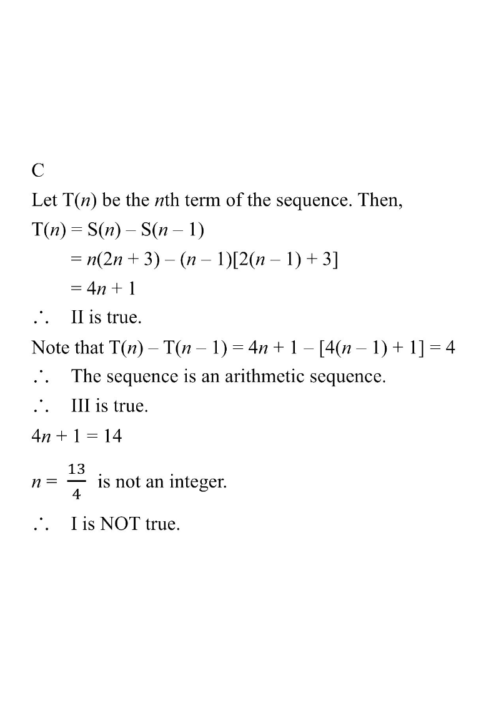

HKDSE Math 2024 · Paper 2 · Q36 · Topic 5 Formulas & Sequences
The sum of the first $n$ terms of a sequence is $S(n) = n(2n+3)$.
Which of the following are true?
I. 14 is a term of the sequence.
II. The $n$th term of the sequence is $4n+1$.
III. The sequence is an arithmetic sequence.
A. I and II only
B. I and III only
C. II and III only
D. I, II and III

Figure (original exam diagram)
Step 1 · Given
The sum of the first $n$ terms is
$$S(n)=n(2n+3)=2n^{2}+3n.$$
Hint: always record $S(n)$ first — every other quantity is derived from it.
Step 2 · Find T(n)
For $n\ge 2$,
$$T(n)=S(n)-S(n-1)$$
$$=n(2n+3)-(n-1)\bigl[2(n-1)+3\bigr]$$
$$=(2n^{2}+3n)-(n-1)(2n+1)$$
$$=(2n^{2}+3n)-(2n^{2}-n-1)=4n+1.$$
So statement II is TRUE.
Hint: subtract consecutive partial sums to isolate a single term.
Term from Partial Sums\(T(n)=S(n)-S(n-1)\)\(S(n)=2n^{2}+3n\), so \(T(n)=(2n^{2}+3n)-(2n^{2}-n-1)=4n+1\).
Step 3 · Check common difference
$$T(n)-T(n-1)=4n+1-\bigl[4(n-1)+1\bigr]=4.$$
The difference is a constant, so the sequence is arithmetic
with common difference $4$:
$$T(1)=5,\;T(2)=9,\;T(3)=13,\;T(4)=17,\dots$$
Statement III is TRUE.
Hint: an arithmetic sequence needs a constant $T(n)-T(n-1)$.
Common Difference of an Arithmetic Sequence\(d=T(n)-T(n-1)\)\(d=(4n+1)-(4n-3)=4\), a constant, so the sequence is arithmetic.
Step 4 · Test 14 as a term
Suppose $T(n)=14$:
$$4n+1=14 \;\Rightarrow\; 4n=13 \;\Rightarrow\; n=\frac{13}{4}\notin\mathbb{Z}^{+}.$$
Since $n$ must be a positive integer, $14$ is NOT a term.
Statement I is FALSE.
Hint: a term index $n$ must be a positive integer.
Answer: C — II and III only.
PRACTICESimilar question — try it yourself
Question. It is given that the sum of the first \(n\) terms of a sequence is \(S(n)=n(3n+1)\). Which of the following are true? I. \(50\) is a term of the sequence. II. \(T(n)=6n-2\). III. The sequence is arithmetic with common difference \(6\).